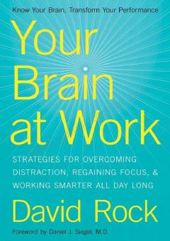

YBMiya faoliyatini tushunish orqali ishda samaradorlikni oshirish va stressni yengish bo'yicha qo'llanma.
Ushbu kitob miya faoliyatini tushunish orqali ish jarayonida diqqatni jamlash, stressni boshqarish va samaradorlikni oshirish strategiyalarini taqdim etadi. Muallif miya qanday ishlashini tushuntirib, kundalik ishda duch kelinadigan qiyinchiliklarni yengib o'tish uchun amaliy maslahatlar beradi.